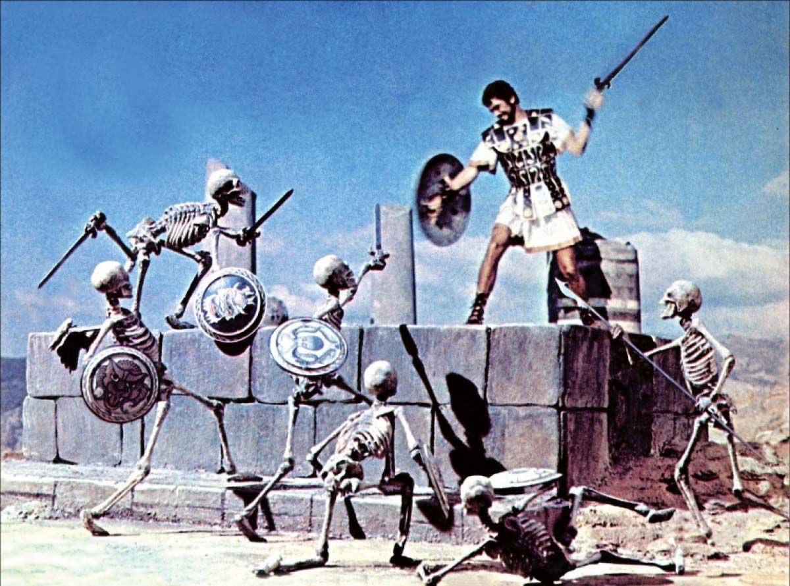
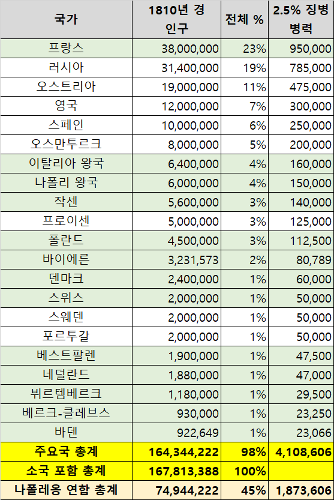
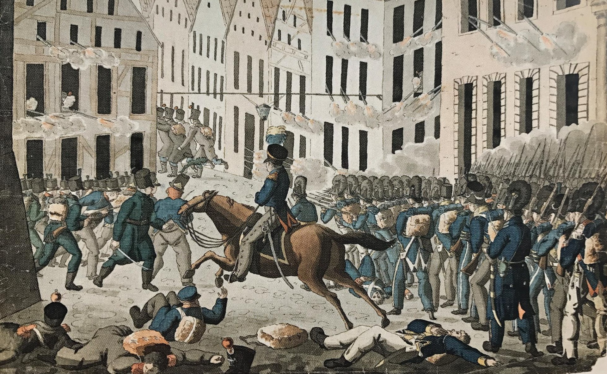
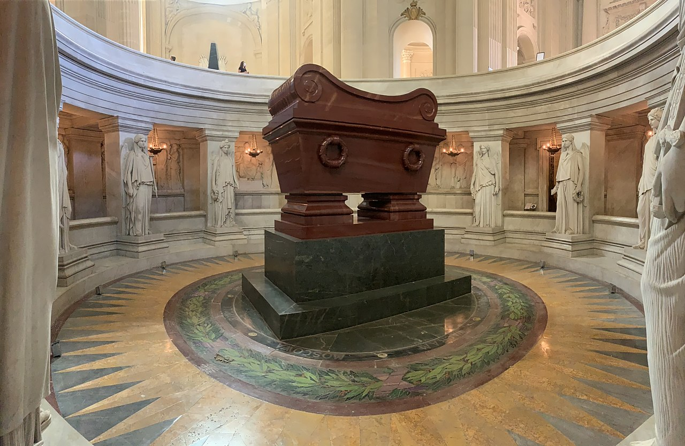

마리-루이즈여 전진하라 - 1813년의 새로운 군대
게시: 2022-02-13T06:30:53+09:00
먼저, 나폴레옹이 어떻게 병력을 충원했는지 보시겠습니다. 나폴레옹이 바로 며칠 전 바르샤바에서 폴란드인들에게 떠들었듯이 그에게는 이미 30만의 새로운 군대를 편성할 계획이 다 서있었습니다. 그 중 10만은 오스트리아-프로이센에서 뽑아낼 생각이었으니 20만이라고 쳐도, 근 1년에 걸쳐 편성했던 50만 대군을 방금 다 말아먹고 돌아온 주제에 봄이 되기 전 3개월 안에 20만 대군을 새로 편성하겠다는 말은 과장이 심한 말처럼 들립니다. 그런데 계산 착오는 있을지언정, 이것이 그다지 큰 과장은 아니었습니다. 나폴레옹에게는 혹시 땅에 뿌리면 병사들이 솟아난다는 그리스 신화 속의 용의 이빨 같은 거라도 있었던 것일까요? 나폴레옹에게는 용의 이빨보다 더 좋은 것이 있었습니다. 바로 프랑스였지요.

(땅에 뿌리면 병사들이 솟아난다는 용의 이빨에 대한 그리스 신화는 크게 2가지로서, 테베의 창건자인 카드무스에서도 나오고 황금양털을 찾아 떠난 모험가인 이아손과 아르고의 항해자들(Argonauts)에서도 동일하게 나옵니다. 아르고 항해자들은 이아손과 함께 모험을 떠난 50인의 영웅들인데, 그 명단은 신화나 문헌마다 제각각입니다. 이 50인 속에 포함되는 것이 가문과 도시의 영광으로 간주되었기 때문에 후손들이나 시인들이 은근슬쩍 자기 조상이나 자기 도시 영웅들을 끼워넣었기 때문이라고 합니다. 일부 전설에 따르면 그 50인 중에는 헤라클레스도 끼어있습니다. 생각해보면 이처럼 능력치와 성격이 서로 다른 영웅들이 하나의 그룹을 만든다는 아르고 항해자들의 컨셉을 따서 만든 것이 바로 마블 어벤저스 아닌가 싶습니다. 사진은 1963년도 영화인 Jason and the Argonauts의 한 장면입니다.)
아래 표는 1810년 경의 유럽 주요국들의 인구 추산치입니다. 단, 이때의 인구 통계는 전혀 정확하지 않았다는 것은 감안하셔야 합니다. 통계학이 가장 앞섰다는 영국에서도 1801년에애 최초로 인구 조사가 실시되었고, 프랑스는 1876년에야 공식 인구 조사 결과가 나왔으니까요. 그리고 이때 벨기에는 프랑스의 일부였었고, 프로이센은 인구의 거의 절반을 베스트팔렌 등 신생 라인연방국에 빼앗겨 쪼그라든 상태였으며, 러시아나 오스트리아가 지금보다는 큰 상태였다는 것을 참고하셔야 합니다.

보시다시피 당시만 해도 프랑스는 유럽의 초강대국으로서 유럽 전체 인구의 거의 1/4을 차지하고 있었고, 프랑스와 러시아의 인구를 합하면 전체 유럽 인구의 40%에 달했습니다. 그래서 나폴레옹은 유럽 제패를 기획하며 러시아는 정복 대상이 아니라 협력 대상으로 삼았던 것입니다. 유럽 대륙의 3명의 황제인 나폴레옹, 알렉산드르, 프란츠 1세가 다스리는 인구를 합하면 유럽 전체 인구의 절반이 훌쩍 넘었습니다. 1810년 초, 오스트리아 합스부르크 왕조와 혼인 관계를 맺은 나폴레옹의 구상대로 모든 것이 흘러갔다면 그 3각체제는 꽤 오랫동안 유지될 수 있었을 것입니다. 그리고 그 중에서 나폴레옹이 우두머리 노릇을 하는 것이 당연했습니다. 공식적인 나폴레옹의 통제권 하에 있던 나라들의 인구를 합하면, 반란 상태였던 스페인을 빼더라도 전체 유럽 인구의 45%였으니까요. 이렇게 많은 인구에서 병력을 얼마나 뽑아낼 수 있었을까요? 현재 휴전협정 하에서 불안한 평화를 누리고 있는 우리나라는 인구대비 병력 비율이 약 1% 정도입니다. 물론 전시에는 이보다 훨씬 높은 비율의 젊은이들이 군에 징집될 것입니다. 1812년 러시아 원정에 바르샤바 공국은 가용한 병력 9만5천을 박박 긁어 나폴레옹에게 갖다바쳤습니다. 이로 인해, 1812년 말 그랑다르메의 패잔병들이 후퇴하면서 러시아군의 침공이 예상되자 당장 바르샤바를 지킬 병력이 없어서 이탈리아 왕국에서 일부 병력이 차출되어 바르샤바에 배치될 정도였습니다. 그러니 일부 수비 병력 등을 고려하여, 450만 인구 중 대략 11만이 좀 넘는 병력, 대충 2.5% 정도가 당시 사회에서 견딜 수 있는 한계치라고 볼 수 있을 것 같습니다. 이렇게 최대치인 2.5%를 적용해보면 프랑스에서만 95만의 병력을 뽑아낼 수 있었습니다. 그리고 당시 나폴레옹의 통제권 하에 있는 이탈리아 왕국과 나폴리 왕국, 그리고 라인연방국 등의 병력을 합하면 약 170만의 병력이 가용했습니다. 그 중 러시아 원정에 동원된 50만을 빼고 스페인 전선에 발이 묶인 20만을 빼더라도 100만의 여유가 있었습니다. 프랑스 자체 병력만 동원하더라도, 러시아에 갔던 30만과 스페인에 파견된 20만을 빼더라도 아직 45만의 여유가 있었습니다. 물론 국내를 텅 비워둘 수도 없으니 신체 조건이나 나이, 건강 등의 이유로 2선급 수비대로 배치될 인원들을 빼더라도 프랑스와 주요 동맹국에서 20만 정도의 야전군을 빠른 시간 안에 새로 편성하는 것은 결코 불가능한 이야기가 아니었습니다. 가령 인구가 2백만에 불과하여 2.5% 법칙을 적용하면 가용 병력 최대치가 5만 정도인 스웨덴의 경우, 1813년 라이프치히 전투에 3만의 병력을 이끌고 참전했습니다. 본국에도 수비병력을 두어야 했을테니 아마 이 정도 병력이 스웨덴이 동원할 수 있는 총병력이었을 것입니다.

(1813년 라이프치히 전투에서 라이프치히 시내를 공격하는 스웨덴군의 모습입니다. 그야말로 나라의 가용 병력을 총동원했던 스웨덴 왕 베르나도트, 아니 왕세자 카알 요한(Karl Johan)은 한 장소에 양측 60만이 넘는 병력이 투입된 이 대전투 내내 적극적인 참전을 꺼렸습니다. 다른 대국들에게는 그냥 생채기 정도의 병력 피해가 스웨덴에게는 자칫 망국의 참패가 될 수도 있었으니까요. 다만 다른 국가들이 박터지게 싸우는데 자기들만 손가락을 빨고 있는 것이 너무나 창피했던 스웨덴 장교들의 참전을 간청하는 바람에, 베르나도트는 막판에야 라이프치히 시내에 대한 공격을 허가했습니다. 덕분에 양측 사상자가 13만이 넘었던 이 대전투에서 스웨덴군은 35명의 사망자와 173명의 부상자만 냈습니다.) 당시 프랑스의 징집제는 우리나라의 현행제도와는 크게 달랐습니다. 우리나라에서는 원칙적으로 건강에 문제가 없는 한 징집대상의 모든 남성이 징집됩니다. 그러나 당시 프랑스는 징집대상이라고 해서 다 징집하는 것은 아니었고, 그 중 일부만 징집했습니다. 왜냐하면 모든 징집대상을 정말 다 징집했다가는 필요 이상의 병력을 보유하게 되어 오히려 재정적으로 부담이 되었기 때문이었습니다. 게다가 밭이나 목장, 공장 등에서 일을 해야 하는 청년들도 있어야 하니 더욱 그랬습니다. 1798년 제정된 징집법인 주르당-델브렐(Jourdan-Delbrel) 법에 따르면 20세에서 25세 사이의 남성은 3년간 군복무를 해야 했습니다. 그러나 필요에 따라 그 복무 기간은 군당국 마음대로 마구 연장되었습니다. 특히 불공정하게도, 어떤 지방에서는 더 많은 비율의 젊은이들이 군에 징집되었고, 어떤 지방에서는 상대적으로 더 적은 비율이 징집되었습니다. 이는 군당국의 무책임한 편의에 따른 것으로서, 당연히 인기가 바닥이었던 징집에 대한 각 지방별 저항의 강도에 반비례했습니다. 가령 왕당파의 근거지이자 반-나폴레옹 정서의 고향이기도 하고, 프랑스 혁명 이후 내전의 피해가 극심했던 방데(Vendee) 지방에서는 상대적으로 징집률이 낮았습니다. 그러다보니 나폴레옹이 새로운 군대를 편성하려면 그냥 '전에 징집 대상이었지만 징집되지 않은 청년들 모두 집합!'을 외치기만 하면 되었습니다. 법적으로 아무 문제가 없었고, 오히려 공평성 문제에 있어서는 그게 더 옳았던 것입니다. 물론 아무도 그게 더 공정하다고 생각하지 않았습니다. 징집, 특히 전시 상태에서의 징집을 좋아하는 국민은 동서고금 어디에도 없거든요. 이건 그냥 '어쩌라고?'라면서 넘어갈 문제가 아니었습니다. 나폴레옹의 황제정은 당연히 민주주의가 아니었으나, 국민의 지지에 기반한 정권이기도 했습니다. 국민의 지지를 어떻게든 유지해야 했습니다. 그런데 대규모 징집을 실행하면서 그러기는 어려웠습니다. 여기에 대해서 나폴레옹은 뭔가를 해야 했습니다. 민주주의의 꽃은 보통 선거, 그리고 그에 의해 선출되는 입법권을 가진 의회에 있다고 할 수 있지요. 그런 것이 나폴레옹 치하에서도 있긴 했습니다. 그러나 이집트 원정에서 돌아온 뒤 일으킨 브뤼메르 쿠데타로 집권한 후 나폴레옹이 만든 통령 정부 때부터 있던 입법 의회(Corps législatif)는 사실상 법률을 만들 권한이 없었습니다. 원래 통령 정부 하에서, 법안을 만들 권한은 국무 위원회(Conseil d’État)에 있었고, 호민관(Tribunate)들은 그에 대해 토론만 했으며, 정작 입법 의회에서는 그 통과에 대한 찬반 투표만 할 수 있었습니다. 그나마 나폴레옹이 황제로 즉위한 이후에는 거수기 노릇조차 제대로 시키지 않았기 때문에, 러시아 원정을 떠나기 직전 드레스덴에서 오스트리아의 외교관 메테르니히를 만난 나폴레옹은 '입법 의회를 그냥 폐지할까 생각 중'이라는 말을 하기도 했습니다. 나폴레옹은 대규모 신규 징병에 이 입법 의회를 동원했습니다. 원래 1813년의 정상적인 징병은 15만을 모으게 되어 있었습니다. 거기에 덧붙여 1813년 1월, 나폴레옹은 입법 의회로 하여금 새로운 법안을 승인하도록 하여 1809년부터 1812년까지 4년 동안 징집되지 않았던 청년 층에서 10만을 추가로 징집했습니다. 또 별도의 10만을 추가 징집하여 국내에 남아 지역을 지킬 수비대인 국민방위군(la Garde Nationale)으로 편성했습니다. 이와 동시에 그의 전통적인 강력한 통치 기구였던 어용 언론을 동원하여 새로운 전쟁에 대한 대국민 선전을 활발하게 시작했습니다. 무엇보다 나폴레옹 자신이 가장 효과적인 걸어다니는 광고판이었습니다. 얼어붙은 러시아 땅에서 개고생을 하던 외국 병사들조차 그의 위명과 카리스마에 자기도 모르게 경외감을 느꼈듯이, 살아있는 역사적 영웅 나폴레옹은 가는 곳마다 국민들의 열광을 불러 일으키기에 충분했습니다. 나폴레옹은 튈르리 궁 깊숙한 곳에서 서류더미 속에 파묻히기 보다는, 일부러 황후 마리-루이즈와 함께 파리의 거리에 자주 나타나 시민들의 시선을 끌었고, 시민들은 그런 모습에 열광했습니다. 상이군인들을 수용하는 병원이자 숙소인 앵밸리드(Les Invalides, Hôtel national des Invalides)를 황후와 함께 방문하여 상이군인들을 위문할 때는 그들이 먹는 음식을 맛보는 것은 물론, 황후에게까지 직접 맛보도록 했습니다. 같은 음식을 먹는다는 것이 어떤 의미를 가지는지 나폴레옹은 병사들과의 오랜 경험을 통해 잘 알고 있었고, 그런 쇼우를 통해 그는 프랑스 국민들의 마음을 장악했습니다.

(나폴레옹의 집사였던 콩스탕(Constant)의 회고록에 따르면 나폴레옹은 음식에 머리카락이 들어간 것을 유별나게 싫어했습니다. 그런 그가 어떤 전쟁터에서 병사들의 생활 환경을 시찰하던 중에, 병사들이 끓이고 있던 수프를 한 접시 나눠 달라고 청했습니다. 나폴레옹은 그렇게 병사들이 먹는 음식을 같이 먹으며 병사들과의 유대감을 높이는 것을 좋아했습니다. 그런데 먹다보니 수프에서 그만 머리카락이 나왔습니다! 나폴레옹이 재빨리 주변을 둘러보니, 근위대 병사가 나폴레옹에 대한 외경심으로 바짝 얼은 채 보고 있더랍니다. 이런 와중에 '젠장 나 안 먹어'라고 수프를 내동댕이치면 병사들이 뭐라고 생각하겠습니까 ? 나폴레옹은 진짜 영웅이었습니다. 그는 침착하게 머리카락을 건져내고 그 수프를 싹싹 긁어먹은 뒤, 한 접시 더 달라는 호기까지 부렸습니다. 그런데 그 두번째 수프 그릇에서도 그만 머리카락이 나왔다고 합니다.)
(프랑스어 관사인 les를 앞에 붙여서 보통 '레쟁밸리드'라고 부르는 앵밸리드입니다. 루이 14세가 1671년에 착공하여 1706년에 완공되었습니다. 이 곳은 단순한 병원이나 기숙사 건물이 아니라 기념관과 교회 등이 들어선 복합 건물이고, 지금은 군사 박물관도 들어있습니다. 또한 프랑스 국방 관련 각종 위인들의 시신이 안치된 무덤이기도 합니다. 여기에 모셔진 인물 중에는 포슈(Ferdinand Foch)와 같은 제1차 세계대전 때의 인물도 있고 보방(Sébastien Le Prestre de Vauban)과 같은 나폴레옹 이전 시대의 인물도 있습니다만, 아무래도 나폴레옹 시대의 인물들이 가장 많이 모셔져 있습니다. 나폴레옹의 친구이자 궁정관이었던 뒤록(Géraud Duroc)도 여기 묻혀 있고 나폴레옹의 형제들, 가령 조제프와 제롬 등도 여기 묻혀 있습니다.

(앵밸리드에는 최종보스 끝판왕인 나폴레옹 본인도 바로 여기에 모셔져 있습니다. 으리으리한 건물이 망자의 유해에 의미를 부여하기 보다는, 망자의 유해가 이 건물에 의미를 주는 경우이지요.) 덕분에 이렇게 추가 징집되는 어린 병사들의 사기는 결코 낮지 않았습니다. 그러나 훈련 상태는 그렇지 못했습니다. 아무리 나폴레옹이 재주가 좋다고 하더라도, 시간을 만들어 낼 방법은 없었습니다. 예전에는 징집된 신병은 최소한 90일 간의 훈련을 받고 나서야 정규 연대에 보충병으로 편성되었습니다. 단순한 머스켓 소총으로 무장된 병사들이 뭐 훈련할 것이 많을까 싶습니다만, 의외로 훈련할 내용이 많았습니다. 가령 당시의 전열보병 전술에서는 제식훈련이 무엇보다 중요했으며, 또 머스켓 소총의 장전과 청소, 사격 등에도 꽤 긴 시간의 훈련이 필요했습니다. 게다가 전열보병 앞에서 활약해야 하는 유격병들의 훈련에는 더욱 많은 시간이 필요했습니다. 하지만 시간이 없었습니다. 이들은 짧게는 20일 정도, 길어야 1달 정도의 훈련만 받을 수 있었습니다.

(이렇게 마구잡이로 징집된 주정뱅이, 불구, 어린이 등으로 구성된 군대를 사열하는 나폴레옹을 조롱하는 당시 영국의 만화입니다.)
나중의 일입니디만, 나폴레옹을 배신한 라구사(Ragusa) 공작 마르몽(Auguste de Marmont)은 회고록에 이렇게 적었습니다. "이렇게 편성된 부대들은 대단한 가치를 보여주었다. 바로 전날 입대하여 당장 전선에 투입된 징집병들은 용기를 가지고 마치 고참 병사들처럼 싸웠다... 그런 병사들 중 하나는 보병 전열 속에서 적군과 총탄을 주고 받는 와중에도 무척이나 침착한 모습을 보여주었으나, 이상하게도 총을 쏘지는 않았다. 내가 왜 총을 쏘지 않느냐고 묻자, 그 병사는 순진한 목소리로 누가 자기 총에 탄약을 장전해준다면 잘 쏠 수 있다고 대답했다." 그 어린 병사에게는 종이 탄약포를 물어뜯어 머스켓 소총에 화약과 머스켓볼을 장전하고 발화접시에 적정량의 뇌관용 화약을 뿌리는 훈련이 제대로 되어있지 않았던 것입니다. 1813년 1월부터 소집된 신병들은 나이가 그렇게 어리지는 않았습니다. 모두 20세가 훌쩍 넘은 나이였으니까요. 그러나 이후에는 20세가 되지 않은 청년들까지도 마구 징집했고, 특히 10월 이후에 모집된 10대 병사들은 전장에 나간 나폴레옹을 대신하여 징집 법안에 서명한 황후 마리-루이즈의 이름을 따서 '마리-루이즈(Marie-Louise)라고 불리기 시작했습니다. 특히 과거에는 적어도 키가 160cm 이상 되는 청년들만 징집했으나, 인원이 부족해지자 점점 그 기준을 낮춰 155cm까지 징집하도록 했습니다. 그러나 실제 기준은 더 낮아서, 사정이 나빠진 1814년 초에는 150cm의 소년까지도 징집했다고 합니다. 나폴레옹은 이렇게 순식간에 25만 대군을 편성할 수 있었습니다. 그런데, 과연 이들에게 소총과 탄약, 군화와 군복, 벨트와 배낭을 일일이 지급할 수 있었을까요? 당시 프랑스의 산업 생산력이 과연 그 정도였을까요? Source : 1812 Napoleon's Fatal March on Moscow by Adam Zamoyski The Life of Napoleon Bonaparte, by William Milligan Sloane
https://www.napoleon-series.org/research/abstract/population/population/world/c_world2.html https://en.wikipedia.org/wiki/Battle_of_Leipzig https://en.wikipedia.org/wiki/Marie-Louise_(conscript) https://en.wikipedia.org/wiki/Les_Invalides
https://www.history.com/news/soldier-wartime-food-rations-battle-napoleon-vietnam